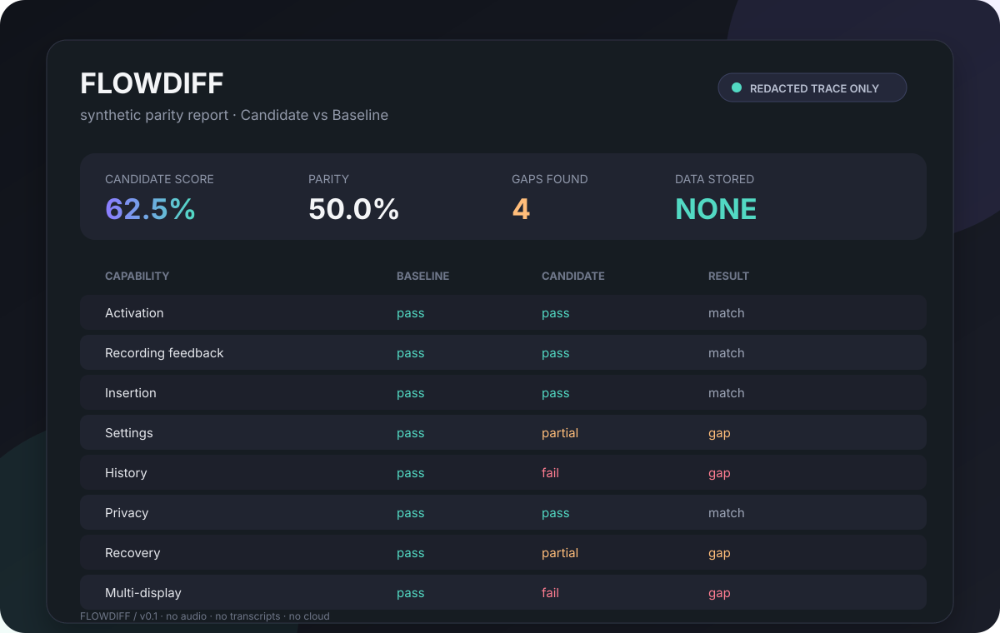

THE PAYOFF
Find the gap while it is still cheap to fix.
Activation can feel great while recovery, history, or multi-display behavior quietly falls behind. FlowDiff makes that gap visible.
Read the contractVOICE UX / EVIDENCE KIT
Compare redacted capability traces and catch regressions before they become a debate.
Local only. Nothing is uploaded.

FlowDiff gives a side-by-side test a stable vocabulary, so the next check starts from evidence instead of memory.
THE PAYOFF
Activation can feel great while recovery, history, or multi-display behavior quietly falls behind. FlowDiff makes that gap visible.
Read the contractA SMALLER LOOP
Keep the trace human-authored and bounded. Let the report carry the repeatable part.
Record outcomes and evidence codes, never dictated text or screenshots.
Normalize the two traces into one capability matrix with bounded timing deltas.
Share a compact report that names the gap and the next useful check.
The public contract accepts eight capability events, bounded statuses, and allowlisted evidence codes. Unknown fields fail closed.
{
"schema_version": "1",
"app": "Candidate",
"events": [{
"capability": "activation",
"status": "pass",
"duration_ms": 150,
"evidence_codes": ["bar_opened"]
}]
}OPEN SOURCE / LOCAL FIRST